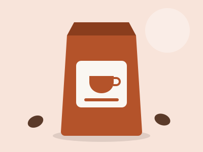

Pitalito, Huila
Huila Supremo
Balanceado
Caramelo, panela y cítricos
$ 145.000 Bolsa de 2,5 kg
Catálogo vivo de la interfaz de AromaSur Café. Cada ficha documenta para qué sirve el componente, qué elementos HTML lo forman, sus variantes, sus estados y sus reglas de accesibilidad. Es la base del documento de la evidencia AA4-EV02.
Variables de css/tokens.css que traducen los estilos de Figma. Ningún componente escribe un color directamente.
--espacio-2 (8) a --espacio-12 (48).primario-700
#5B3A29 · 10.09:1
primario-500
#8B5E3C · 5.58:1
secundario
#2F6B3A · 6.39:1
acento
#B4532A · 4.99:1
texto
#1F1A17 · 17.24:1
texto-suave
#6F6259 · 5.89:1
error
#B42318 · 6.57:1
exito
#1F7A3A · 5.38:1
Ejecuta una acción (enviar, agregar, abrir). Si lleva a otra página, se usa un enlace <a> con la misma apariencia.
<button type="submit|button"> o <a href>.boton + --primario, --secundario, --texto, --icono, --bloquearia-busy="true").aria-label. Un único botón primario por pantalla.Captura un dato del usuario con su etiqueta visible, texto de ayuda y mensaje de error.
<label for>, <input> o <select>, <p> de ayuda y de error..campo, __etiqueta, __control, __ayuda, __error, __envoltura, __accionaria-invalid="true") y deshabilitado.aria-describedby conecta ayuda y error; autocomplete según el dato.Usa el correo de tu negocio.
Escribe 10 dígitos que empiecen por 3, sin espacios.
Confirma una aceptación o una opción de sí/no.
<label> que envuelve <input type="checkbox"> y el texto.required se valida como cualquier campo.Etiqueta corta que clasifica o informa un estado.
<span> dentro del texto al que pertenece.--suave, --balanceado, --intenso (también usadas para estados del pedido).Permiten elegir un filtro entre varias opciones excluyentes.
<fieldset> + <legend> y un <input type="radio"> por opción.:checked) y foco visible.Resume un café del catálogo y permite agregarlo al pedido.
<article>, <img alt>, <h3>, <p>, insignia y botón.<template>.aria-label="Agregar Huila Supremo al pedido".
Pitalito, Huila
Balanceado
Caramelo, panela y cítricos
$ 145.000 Bolsa de 2,5 kg
Ventana que pide atención o confirmación sin salir de la pantalla.
<dialog> nativo con cabecera (<h2> + cerrar), cuerpo y pie de acciones.showModal() oscurece el fondo, atrapa el foco y se cierra con Esc.aria-labelledby apunta al título; el botón cerrar tiene aria-label.Mensaje breve que confirma una acción y desaparece solo.
role="status" y aria-live="polite"; lo crea AromaUI.toast().--info, --exito, --error.Muestra registros comparables, como el historial de pedidos.
<table>, <caption>, <thead>, <th scope>, <tbody>.tabindex="0" para usarlo con teclado.| Pedido | Fecha | Total | Estado |
|---|---|---|---|
| PED-1042 | 12/11/2026 | $ 1.160.000 | En preparación |